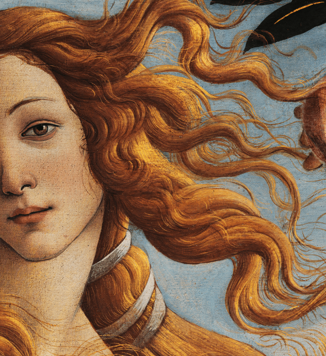
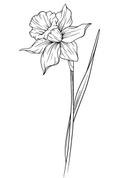

Myths in Art
The allure of Greek myths has enthralled artists throughout history, dating back to the creation of gods and goddesses in marble by ancient sculptors.
The trials faced by ancient Greek heroes and the encounters with monsters have inspired artists across diverse periods, including Renaissance masters, Surrealists, and conceptual artists. While there isn't a singular, cohesive narrative of Greek mythology, works like Homer's Iliad and Ovid's Metamorphoses offer alternative histories of humanity. These sources trace the origins of the first woman and recount the tragic downfall of Troy, providing rich and enduring material for artistic interpretation and expression.

The Birth of Venus
Sandro Botticelli's "The Birth of Venus" stands as one of the most famous paintings globally, created for the influential Medici family, who were Florence's preeminent power during that era. This masterpiece is a highlight within the Botticelli Rooms at the renowned Uffizi Galleries in Florence. Originally crafted for the Medici's villa of Castello, the painting portrays the goddess of love and beauty, Venus, in a striking and nude form.
The scene captures her landing at Paphos, Cyprus, emerging from a shell in the sea, with the wind gently blowing and a nymph poised to cover her with a delicate cloak.
The Fall of Phaeton
Painted by the Flemish master Peter Paul Rubens, the artwork portrays the ancient Greek myth of Phaeton, a recurring subject in visual arts. Phaeton, son of the Oceanid Clymene and the solar deity Helios, requested proof of his divine parentage. Helios, in response, promised to grant him any wish. Despite attempts to dissuade Phaeton, he insisted on driving the sun chariot for a day. Unable to control the horses, Phaeton approached dangerously close to Earth, prompting Zeus to intervene and strike him down with a thunderbolt to avert disaster. Phaeton fell to his death.
In Rubens' painting, the artist chose to depict the myth at its climactic moment, capturing the intensity as Zeus' thunderbolts hurtle towards Phaeton's chariot. Surrounding him are butterfly-winged female figures representing the hours and seasons, reacting with terror as the accident disrupts the natural cycle of night and day. The artwork, titled "The Fall of Phaeton," showcases Rubens' masterful interpretation of the myth, emphasizing the dramatic and catastrophic elements of the narrative.
Narcissus
The narrative of Narcissus is a frequently retold tale in literature, finding reinterpretations by writers such as Dante and Petrarch and visual representations by numerous Renaissance artists, including Caravaggio.
According to the myth, Narcissus, a hunter from Thespiae in Boeotia, was renowned for his exceptional beauty. While experiencing thirst during a hunting expedition, he leaned upon the water and caught sight of his own reflection in the bloom of youth. Unaware that it was his own image, Narcissus became deeply infatuated with it, unable to tear himself away from the allure. Realizing that his love could not be reciprocated, he succumbed to his passion and perished, transforming into a gold and white flower.
Caravaggio's painting, one of two on the theme from Classical mythology, captures Narcissus adorned in an elegant brocade doublet, fixated on his own distorted reflection. Encircled by darkness, the figure is entrapped in a contemplative state, evoking an atmosphere of brooding melancholy. Caravaggio's interpretation skillfully captures the emotional complexity of Narcissus's tragic tale.
Ariadne
In Greek mythology, Ariadne, a Cretan princess, found herself enamored with Theseus, the courageous volunteer who pledged to slay the Minotaur—a mythical creature with the body of a man and the head of a bull, sent to Minos by the god Poseidon for sacrifice. To aid Theseus in his perilous task, Ariadne equipped him with a sword and a ball of thread, enabling him to navigate the labyrinth of the Minotaur and find his way back out. Following Theseus's triumphant victory over the beast, Ariadne chose to betray her father and homeland, opting to elope with Theseus. However, her joy was short-lived as Theseus later abandoned her while she slept on Naxos.
Giorgio de Chirico, in this early 20th-century painting, captured Ariadne in a vulnerable state, depicted as she lay sleeping in an empty public square. The work, as interpreted by the Metropolitan Museum of Art, reflects de Chirico's personal sense of isolation after relocating to Paris in 1911. The painting not only encapsulates the mythological narrative of Ariadne but also serves as a poignant expression of the artist's own emotions and experiences during a significant period in his life.
Leda and the Swan
The myth of Leda and the Swan, a perplexing tale in Greek mythology, resonates strongly in the annals of art history. In this myth, Zeus assumes the form of a swan to rape Leda, the queen of Sparta, leading to the birth of Helen. The narrative takes a distressing turn as Helen's subsequent actions, running off with or being abducted by the Trojan prince Paris, become catalysts for the Trojan War.
This motif of woman and bird, accompanied by the ensuing destruction, has fascinated artists through the centuries. Leonardo da Vinci, although losing both of his versions of Leda and the Swan, inspired renditions by his students. These paintings depict a demure, nude woman holding a swan, with surviving preparatory sketches by Leonardo himself. In the late 19th century, Paul Cézanne portrayed Leda with a swan biting her hand, showcasing a blonde woman's ambivalent expression. French avant-garde artist Marie Laurencin depicted a contemplative Leda dressed in pink, leaning over a black railing to pet the bird. Cy Twombly offered his Abstract Expressionist interpretation, creating a chaotic blend of crayon, pencil, and paint, featuring discernible elements like hearts and a penis. The enduring allure of Leda and the Swan in art underscores its timeless and complex nature.